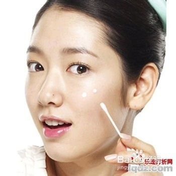
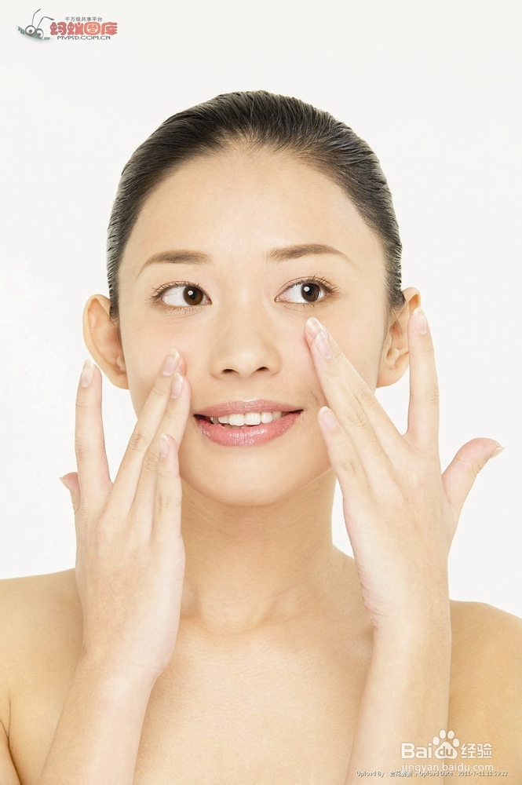
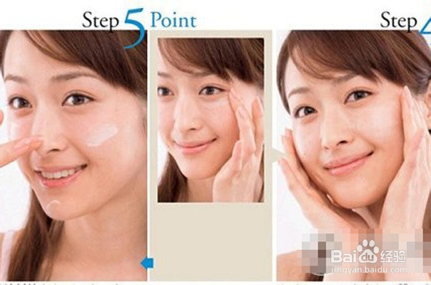

怎样护肤?正确的护肤步骤有哪些？护肤品怎么用？针对这些问题，可能每个MM都有自己的答案。可是MM们究竟做对了吗？今天，就让小编来告诉你，正确的护肤步骤应该是怎样的，护肤品又应该怎么用 |
方法/步骤 |
| 洗脸：白天只用洗面奶就行了，晚上的话，先用卸妆乳，再用洗面奶。化妆过或者使用过隔离霜、防晒霜就一定要卸妆。 |
| 使用爽肤水：用化妆棉蘸爽肤水擦脸，能起到二次清洁的作用，如果想保湿就用手直接拍脸上，但是不能太重，轻拍就可以。无论用哪种方法，都要用到皮肤不干为止。 |
|  |
| 使用精华液：先将手部搓热，将精华液均匀的搽在脸上，注意精华成分要避开眼周肌肤，用手掌轻轻按压面部的U区，按照由下到上、由外至内的方式轻柔按压，确保精华成分的完全吸收，T区也用相同的方式重复。最后利用手指肚轻轻敲弹脸部的肌肤，100下为一组，进行3组即可。 |
|  |
| 保湿：根据自己的肤质选择不同的保湿护肤品。秋冬季节皮肤干的话就用霜，白天用日霜，晚上用晚霜。春夏皮肤比较湿润用乳就行了。如果是晚上护肤不敷面膜的话，这是最后一步哦！ |
|  |